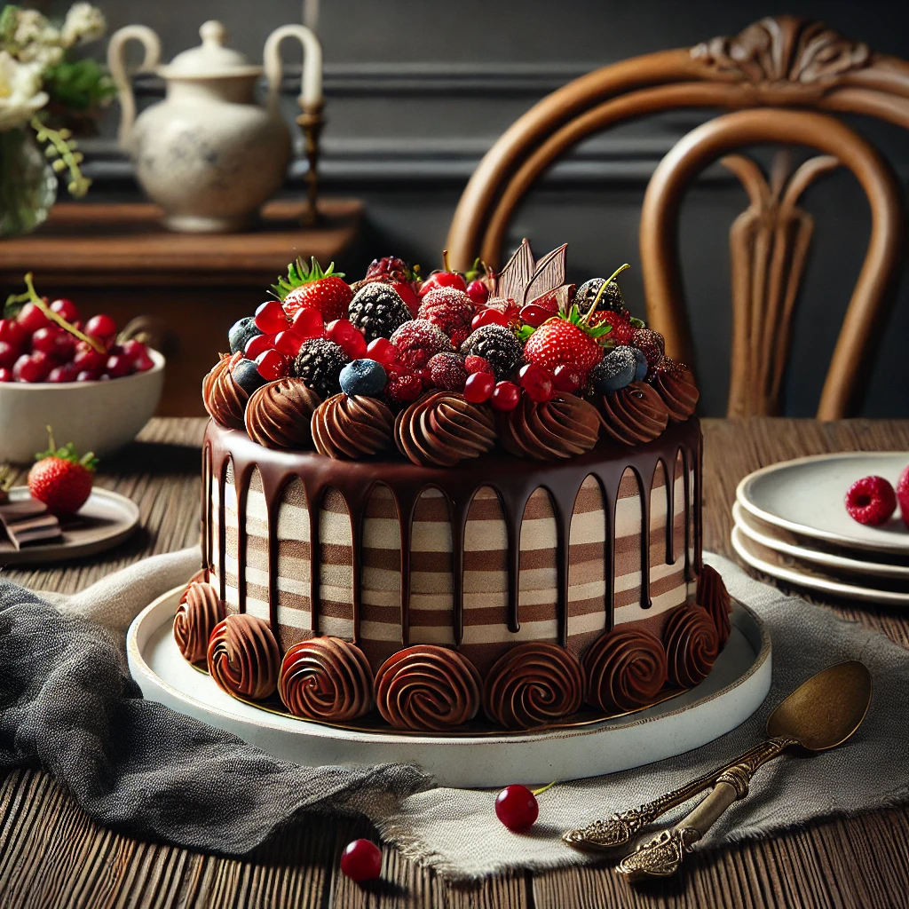

Receita de Bolo de Chocolate

Ingredientes:
- 3 ovos
- 1 xícara de leite
- 1 xícara de açúcar
- 1/2 xícara de óleo vegetal
- 2 xícaras de farinha de trigo
- 1 xícara de cacau em pó
- 1 colher de sopa de fermento em pó
- 1 barra de chocolate meio amargo picado
Modo de Preparo:
- Preaqueça o forno a 180°C e unte uma forma com manteiga e farinha.
- Em uma tigela, bata os ovos com o açúcar até obter uma mistura cremosa.
- Acrescente o leite e o óleo vegetal à mistura de ovos e açúcar, mexendo bem.
- Adicione o cacau em pó e misture até ficar homogêneo.
- Aos poucos, adicione a farinha de trigo peneirada e misture até incorporar todos os ingredientes.
- Por último, adicione o fermento em pó e misture delicadamente.
- Adicione o chocolate meio amargo picado à massa e misture bem.
- Despeje a massa na forma preparada e leve ao forno por aproximadamente 35-40 minutos, ou até que o bolo esteja dourado e ao inserir um palito no centro, ele saia limpo.
- Retire do forno e deixe esfriar antes de desenformar.
- Sirva fatias desse delicioso bolo de chocolate e aproveite!